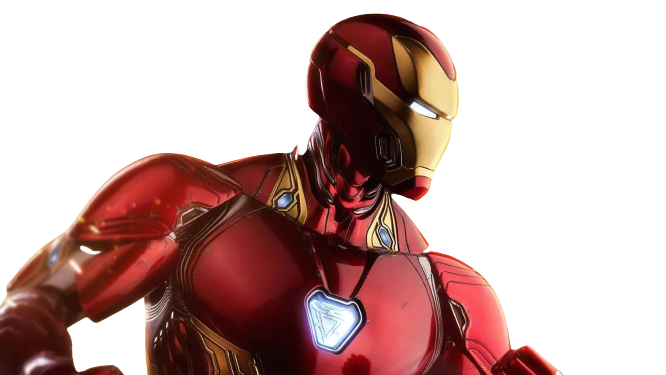

Iron Man is a genius, billionaire, philanthropist, and superhero who likes to joke, and insult his enemies.
He wears a high-tech suit of armor that lets him fly, shoot lasers, and lift Thor’s hammer (sometimes).
He is also a science bro who loves to experiment with new inventions and save the world from evil.
He is confident, witty, and sarcastic, but also has a heart of golden
